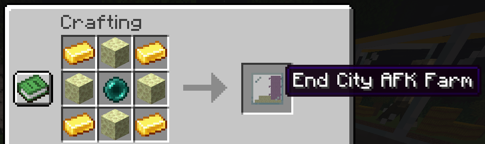
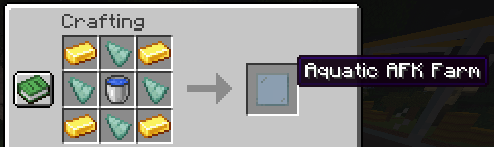
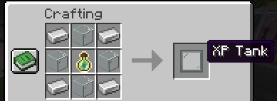
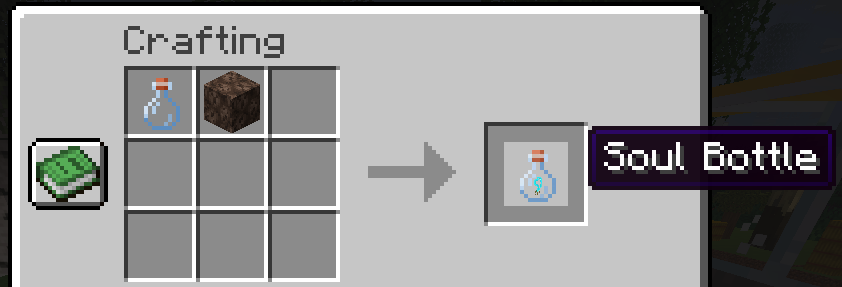
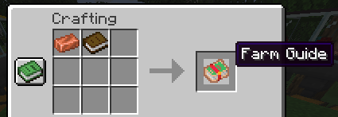
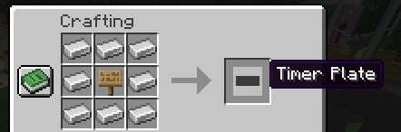

Todas as receitas do mod, num lugar só.
G X G
X C X
G X GG = Lingote de Ouro · X = Vidro · C = Bloco de Carvão
G N G
N M N
G N GG = Lingote de Ouro · N = Nether Brick · M = Bloco de Magma

G E G
E P E
G E GG = Lingote de Ouro · E = End Stone · P = Pérola do Ender

G P G
P W P
G P GG = Lingote de Ouro · P = Fragmento de Prismarine · W = Balde de Água

I G I
G B G
I G II = Lingote de Ferro · G = Vidro · B = Frasco de Experiência

Frasco de Vidro + Areia das Almas (craft sem formato, encaixe em qualquer posição)

Livro + Lingote de Cobre (craft sem formato)

L L L
L S L
L L LL = Lingote de Ferro · S = qualquer Placa (Sign)